월세 환급을 가입부터 결제, 서류 단계까지 직접 따라가 보며 전환을 막는 지점 3개를 짚었습니다. 오늘은 각 지점을 어떻게 풀지(How) 제안드리고자 합니다.
→ 결제 전에 준비물을 보여 주고, 1건씩, 자동으로 채우기
→ 홈 맨 위에 "이어하기", 내 상황별로 기능 3개만
→ 멈춘 단계에 맞춘 1통, 두 채널이 횟수 제한을 같이 쓰기
이도형 · 그로스 마케터 | ← → 키로 넘기기 · F 전체 화면
2026-10-29 16:17~16:28, 제 실제 정보로 가입했습니다. 시간은 녹화 기준입니다. [직접 확인]
한 줄 결론
돈을 내는 길은 잘 닦여 있고,
돈을 돌려받는 길은 끊겨 있습니다.
순서 · 3번(CRM)은 문구와 규칙만 바꾸면 되어 2주 안에 시험할 수 있습니다. 1번은 화면을 바꿔야 해서 4~8주, 2번은 홈 개편이라 8주 이후로 둡니다.
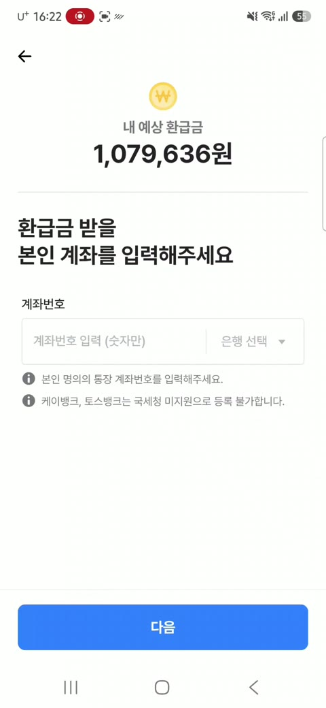
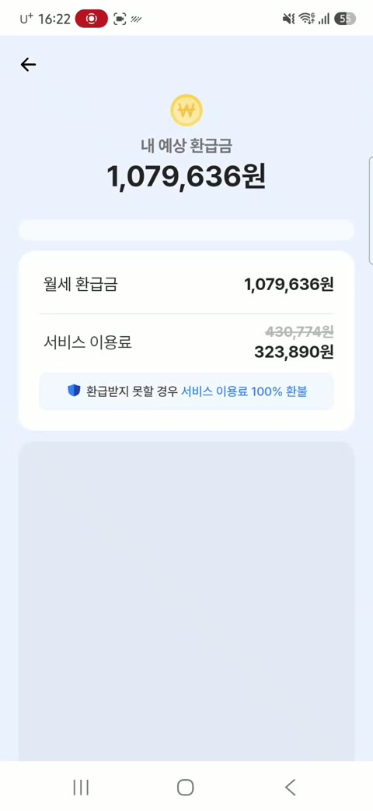
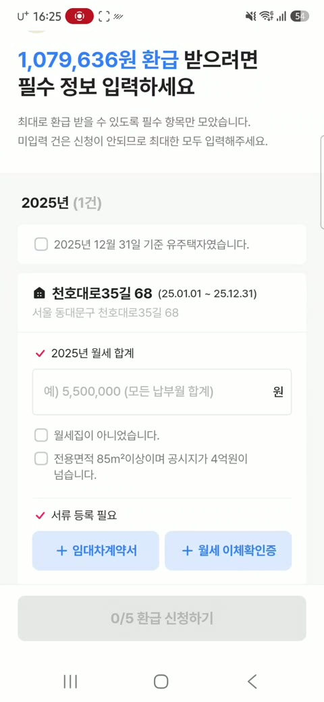
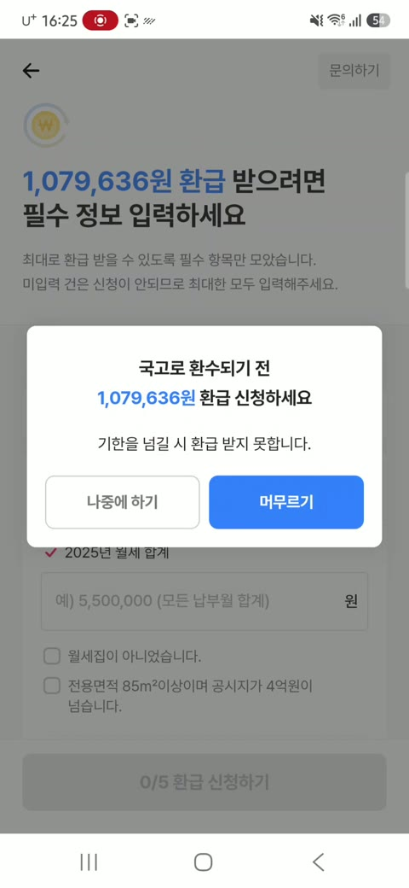
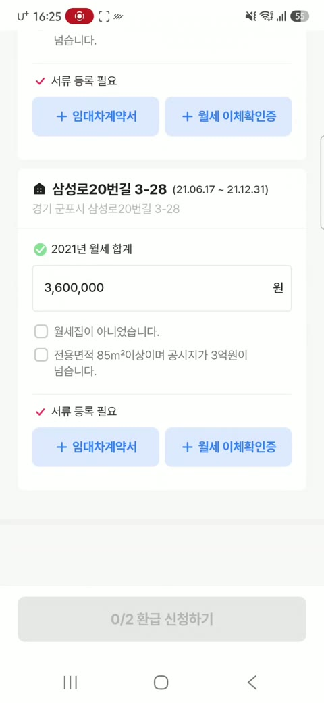
덤으로 본 것 · 기대 금액이 계속 바뀝니다. 첫 화면 최대 685만 원 → 집주인 확인 팝업 최대 252만 원 → 결과 107만 원. 숫자가 내려갈 때마다 믿음도 조금씩 깎입니다.
준비물을 먼저 보여 주면 결제율은 조금 내려가도 결제한 사람의 서류 제출 완료율은 오르고, 환불 요청은 줄어든다.
판정: 결제 수 × 제출 완료율 = "실제로 환급을 신청한 사람 수"가 늘면 채택 [가정]
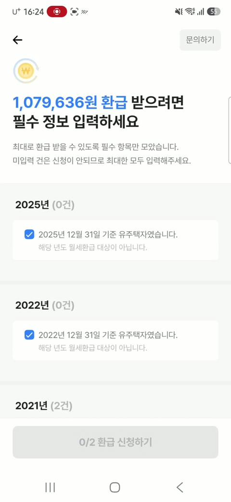
| 서류 | 안내 | 없을 때 |
|---|---|---|
| 월세 이체확인증 | 입금 계좌 은행을 고르면 그 은행 앱 "이체 내역" 화면으로 바로 이동 | 오픈뱅킹 연결로 이체 내역 자동 불러오기 |
| 임대차계약서 | 카메라로 찍으면 주소·기간·월세를 자동 인식(OCR) | 확정일자 받은 계약서면 그 정보로 대신 가능한지 안내 |
| 월세 합계 | 이체 내역에서 자동으로 더함 | "월세 × 개월" 계산기 제공 |
지금 화면 안의 "문의하기"는 오른쪽 위 회색 글자뿐입니다. 서류 단계에서만은 "서류 찾기 도와주세요" 버튼을 크게 두고, 누른 비율을 막힘 신호로 씁니다.
나가는 사람에게는 겁 대신 약속 · 진행 상황을 저장하고, 언제 다시 알려 줄지 본인이 고르게 합니다. 이 선택이 How 3 메시지의 발송 시각이 됩니다.
왜 이 지표인가
결제만 하고 신청을 못 하면 환불 · 나쁜 리뷰 · 재방문 없음으로 이어집니다. 매출은 결제에서, 신뢰는 신청 완료에서 생깁니다.
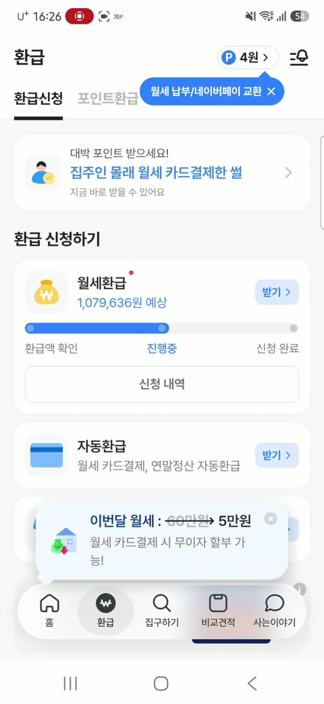
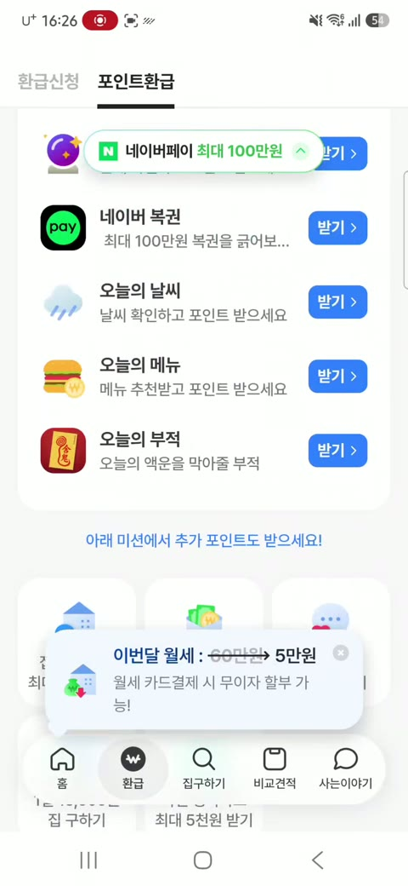
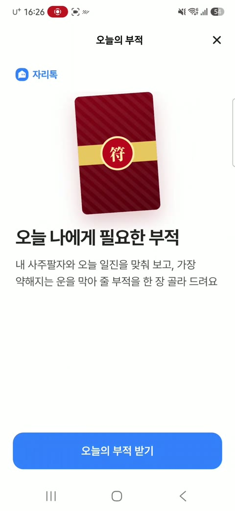
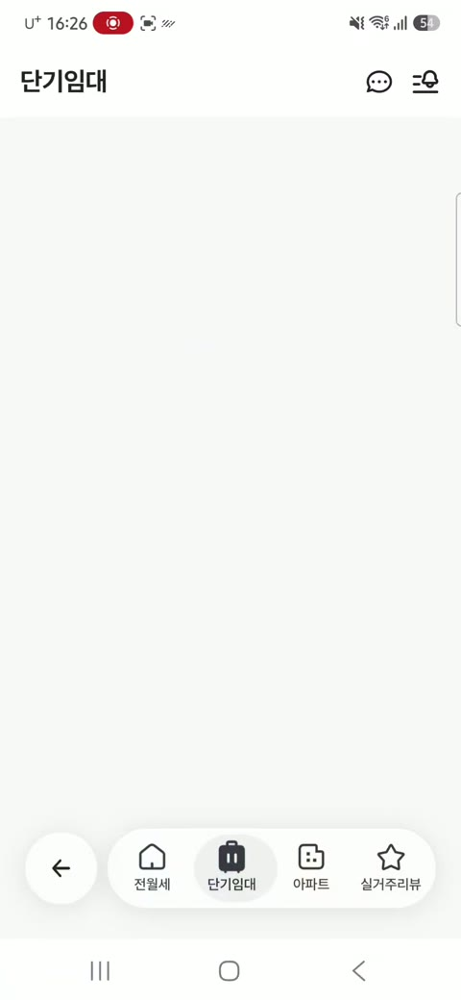
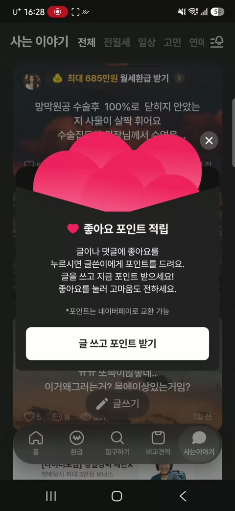
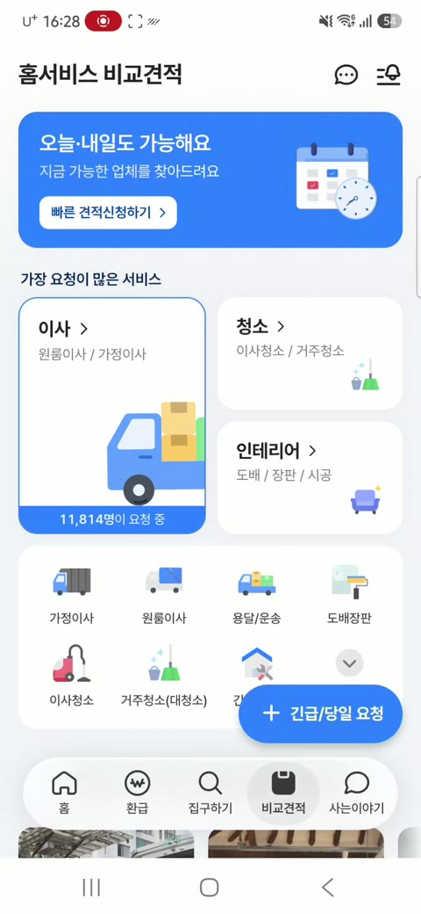
그 밖에 아파트 · 실거주리뷰 지도 · 자리페이 결제 화면까지 눌렀습니다. 빈 화면은 로딩 중이었을 수 있습니다.
32만 원을 내고 멈춘 환급이 홈 맨 위에 없습니다. 환급 탭 안 진행 막대(0/5)로만 보입니다. 가장 중요한 "하다 만 일"을 찾으러 다녀야 합니다.
"집구하기", "비교견적", "사는이야기"는 눌러야 압니다. 비교견적이 이사·청소 업체 견적이라는 건 들어가야 보입니다.
환급 탭에 107만 원 월세환급과 오늘의 부적·운세가 같은 크기 카드로 있습니다. 진지하게 돈을 받으러 온 사람에게 믿음을 깎습니다.
왜 중요한가 · 자리톡은 한 사람이 환급 → 월세 결제 → 이사 견적까지 오래 쓸수록 돈을 법니다. 다음 기능을 우연히 발견하게 두면 그 연결이 끊깁니다.
이어하기 카드 클릭 → 작업 완료율, 그리고 첫 7일 안에 두 번째 기능을 쓴 사람 비율
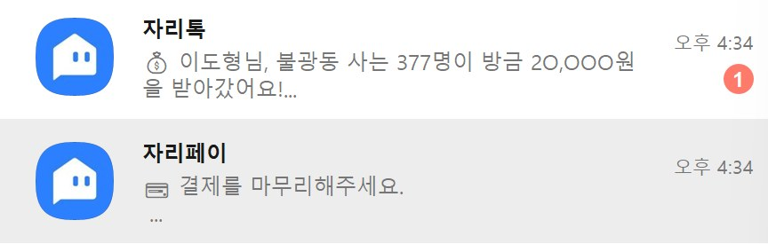
자리톡 · "불광동 사는 377명이 방금 20,000원을 받아갔어요" → 동네 사회적 증거. 제가 막힌 107만 원과는 무관.
자리페이 · "결제를 마무리해주세요" → 32만 원을 방금 낸 사람에게 또 결제 권유.
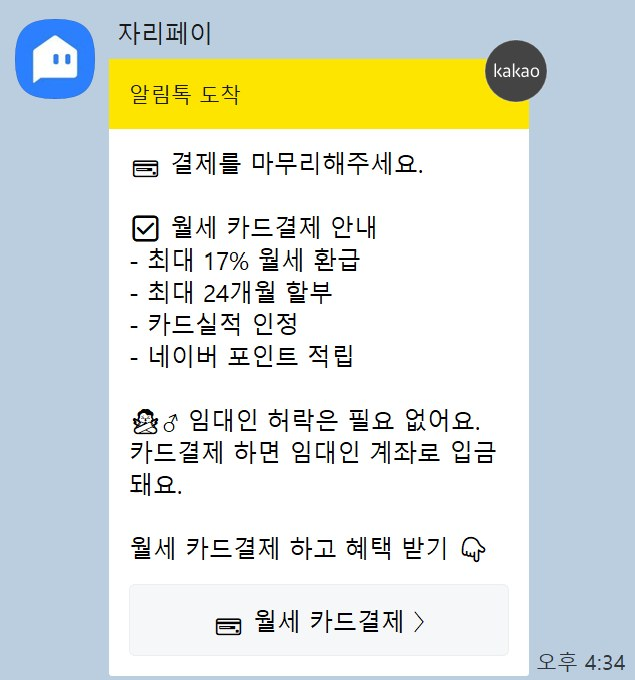
자리페이 메시지는 결제 화면에 들어갔다 나온 행동에 반응한 것으로 보입니다. 정작 "결제 완료 + 서류 0건"이라는 가장 비싼 멈춤에는 아무 메시지가 없었습니다.
자리톡과 자리페이가 각자의 규칙으로 같은 사람에게 같은 분에 보냅니다. 받는 쪽에서는 한 회사가 2통 보낸 것으로 느껴 피로가 두 배입니다.
32만 원 결제자를 판매 메시지에서 빼지 않았습니다. 이 사람에게 필요한 건 "다음 할 일"인데, 받은 건 "더 사세요"입니다.
지난 덱에서 본 리뷰와 같은 결 · 앱스토어 1~3점 리뷰 중 21%가 "알림이 많다"였습니다. 메시지 양보다 맞지 않는 메시지가 불만을 만든다고 봅니다.
| 순위 | 지금 상태 | 보낼 메시지 |
|---|---|---|
| 1 | 이용료 결제 완료 + 서류 0건 | 남은 서류와 받는 법, 이어하기 링크 |
| 2 | 예상 환급금 확인 + 미결제 | 준비물 미리보기 + 예상 금액 |
| 3 | 자리페이 결제 화면 이탈 | 결제 마무리 안내 (단, 1·2번 대상이면 제외) |
| 4 | 특별한 진행 없음 | 동네 소식·포인트 같은 일반 메시지 |
자리톡·자리페이 채널이 하나의 카운터를 봅니다. 한 사람에게 하루 1통, 주 3통 넘지 않게 [가정].
결제 후 7일은 판매 메시지 대신 다음 할 일만 보냅니다.
이어하기 팝업에서 고른 시각(예: 내일 저녁 8시). 고르지 않았으면 이탈 1시간 뒤.
링크는 서류 화면 그 연도 칸으로 바로 엽니다(딥링크).
| 시점 | 내용 | 목적 |
|---|---|---|
| D+0 | 위 메시지 (고른 시각 또는 1시간 뒤) | 남은 일과 방법 |
| D+1 | "계약서가 없으면 이렇게" 1가지만 | 가장 흔한 막힘 풀기 |
| D+3 | "상담사가 같이 찾아드려요" 전화 예약 | 사람이 개입 |
| D+14 | "2025년 1건만 먼저 받으세요" | 부분 완료라도 |
A/B · 지금 메시지(동네 사회적 증거) vs 위 메시지. 메시지 받은 뒤 24시간 안 서류 제출률과 수신 거부율을 같이 봅니다.
결제자 중 7일 안 1건 신청 완료 비율, 이탈 후 받는 메시지 수
메시지 → 서류 제출률, 수신 거부율. 이기면 전체 적용
결제 → 신청 완료 퍼널 개선 폭을 숫자로 보고
고객과 같은 길을 따라가 32만 원을 내고, 막히고, 메시지 2통을 받았습니다. 그 11분이 이 제안의 근거입니다. 입사하면 같은 방식으로 직접 써 보고 → 숫자로 재고 → 작게 바꿉니다.
이전 버전(24장, 포지셔닝·LTV 중심)은 v1.html에 남겨 두었습니다